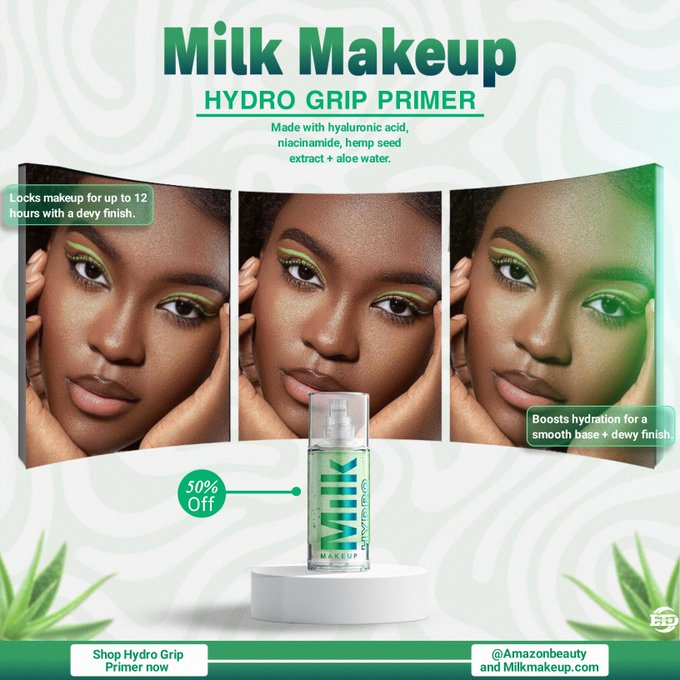
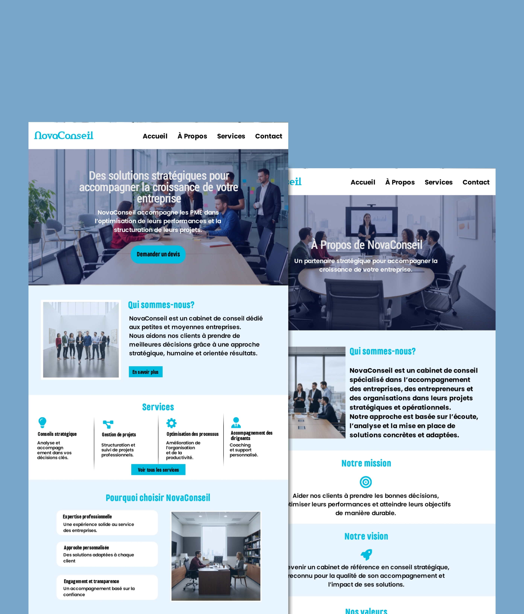
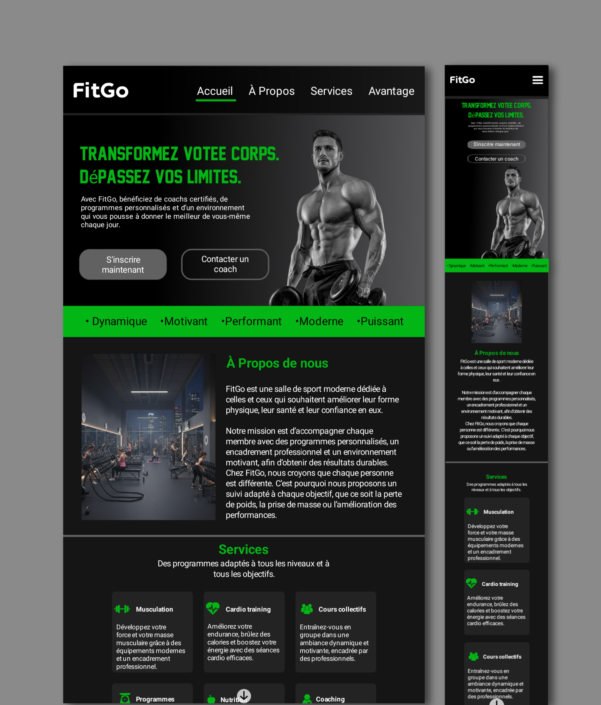

Heyy, Salut!!!
Je suis "Ernson"
Developeur frontend et Graphique designer, je concois des sites web clairs, rapides et adaptés à tous les écrans
A Propos
Qui suis-je?
Je suis Ernson Polynice, graphiste avec trois ans d'expérience et développeur
frontend, spécialisé dans la conception
d'identités visuelles et de supports digitaux modernes et cohérents.
Rigoureux et créatif, je m'attache à produire des designs professionnels qui valorisent
l'image et les objectifs de chaque projet.
En tant que développeur frontend, je transforme mes créations en interfaces web performantes,
responsives et orientées expérience utilisateur. Cette double compétence me permet d'offrir des
solutions digitales complètes, alliant esthétique et efficacité technique.
Services
Ce que je peux faire pour vous
Création de site web
Création de sites web modernes et responsives, adaptés à tous les écrans pour présenter votre activité de manière professionnelle.
Landing pages
Conception de landing pages efficaces pour convertir vos visiteurs en clients et promouvoir un service, un produit ou une offre spécifique.
Graphique Design
Design graphique professionnel pour améliorer l'image de votre marque : visuels, bannières, flyers, identité visuelle.
Processus
Mon processus de travail
Analyse & conpréhension du besoin:
J'échange avec le client afin de bien comprendre son project, ses objectifs, sa cible et
ses attentes.
Cette étape me permet de définir une direction claire avant de commencer le project.
Concéption et design:
Je crée les maquettes (UI) en mettant l'accent sur la clarté, l'esthétique et l'expeérience
utilisateur.
Chaque élément est pensé pour transmettre le bon message et valoriser la marque.
Livraison finale:
Une fois le project validé, je livre les fichiers finaux prets à etre utilisés
(web, impress
ion et réseaux sociaux), dans les formats adaptés.
Project
Découvrez quelques projects représentatifs de mon travail

Affiche publicitaire:
Affiche promotionnelle moderne mettant en valeur le “Hydro Grip Primer”. Le design utilise des tons verts pour évoquer l’hydratation et le naturel.

Site vitrine-NovaConseil:
Project d'un site vitrine axé sur la clarté de l'information, la mise en valeur des services et une expérience utilisateur intuitive.

Landing page-Salle de sport:
Project réalisé pour une salle de sport fictive "FitGo".
Testimonials
Ce que mes clients disent
FAQ
Quéstions fréquemment posées
Retrouvez ici les réponses aux quéstions les plus fréquentes. Cliquez sur chaque quéstion pour afficher la réponse. Si vous avez besoin de plus d'informations, utilisez le formulaire ou les boutons CTA disponible sur le site.
Travaillez-vous avec des clients internationaux?
Oui. Je travaille avec des clients locaux et internationaux, en m’adaptant à votre fuseau horaire et à vos objectifs.
Combien de temps prend un project?
La durée dépend de la complexité. Un design simple peut prendre quelques jours, un site web peut prendre plusieurs jours ou semaines. Un délai clair est fixé avant le début.
Pourquoi devrais-je vous choisir?
Je combine design créatif et développement web pour livrer des solutions modernes, fonctionnelles et orientées résultats.
Quels outils et technologies utilisez-vous?
J’utilise des outils professionnels adaptés aux exigences de chaque projet.
En design : Photoshop
En développement front-end : HTML, CSS et JavaScript, pour créer des interfaces
modernes,
responsives et performantes.
Comment puis-je vous contacter?
Vous pouvez me contacter via les boutons d’appel à l’action (CTA) disponibles sur le site ou en remplissant le formulaire situé en bas de la section FAQ.